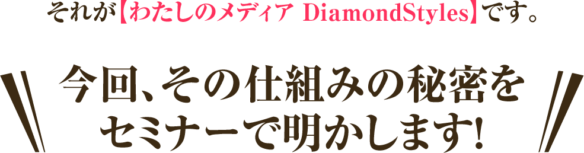

「知ってもらう」には、消費者に“見つけてもらう”ための仕組みづくりが必要なんです。
例えは、今までは、TVCMなどは効果的な方法でした。
TOYOTAは、１日に3億円の広告費をかけているといわれています。
個人事業家は、限られた予算、限られた時間しかありません。
そこで効果的なのは！

限られた予算で、TVCM5億円分の広告に匹敵するオウンドメディア戦略【わたしのメディアDiamondStyles】
個人事業主の90％の方が集客に悩んでいます。
わずか１年で40％しか生き残れないのです。
集客に悩む経営者は、ただがむしゃらに宣伝にお金と時間を使ってしまい、
金銭的に、精神的に追い込まれ燃え尽きてしまうのです。
たとえば、おいしい「おそば」が食べたくなったとしましょう。
「そば屋」とネットで検索すると、膨大な情報が出てきます。
でも、その中からあなたが行きたいお蕎麦屋さんを見つけることは
できるでしょうか？
もし、信頼できる友人や趣味が近い知り合いからの情報だったら、
自分の好みの「そば屋」である確率が高いですね。
そこで、頼りになるのが、口コミサイトの情報や
ソーシャルメディアでの共感なのです。
ソーシャルの中でも、Facebookは、間違いなく人類史上最大最高の口コミ拡散ツールと言えます！
また、今やスマホ・タブレットの時代インターネットから誰でも、
簡単に膨大な情報を手に入れることができるようになりました。
この時代は、言い換えればチャンスの時代でもあるのです。
自ら発信できる手段を、私たちは同時に手に入れました。
フェイスブック、ツイッターに代表される、ソーシャルメディアの普及と多様化により、
ユーザー様との接点は多種多様になりました。
この中で、各メディアを統合・補完し、相乗的に高め集客につなげる仕組み！

これだけの価値を提供するのであれは、本来70,000円程のセミナーとなりますが、
今回はよりたくさんの方にこの戦略をお伝え致したく、相談の上、無料にすることにいたしました。
■ 11月5日 16:30 ～ 18:30残席僅か！
■ 11月9日 19:00 ～ 21:00残席僅か！
■ 11月17日 19:00 ～ 21:00残席僅か！
■ 11月26日 19:00 ～ 21:00残席僅か！
私たち４人は、以前はフェイスブック個人アカウントをブレイクさせる方法を教えていました。
しかし、個人アカウントのブレイクだけでは、
ビジネスの成功には結びつきにくい現状を何とかしないとならないと立ち上がりました。
また、起業に関する様々なセミナーを個々に受けても、統合していかなければ意味がありません。
インプットのための費用がかさむばかりです。
それぞれの成功体験を持ち寄り
私たち４人は、リアルにweb上での集客や売り上げアップ、人脈作りに大成功しているからこそ、作れた内容です！
４人全員が持つSNS影響力を持ち寄り、皆さんの応援団となっていきます。
今こそ！本当の意味で
「個人が能力を発揮しつつ、自立して共に社会に参加し、支えあう、「共生社会」の形成」が
必要な時期なのです。
４人の力を結集し、きっとあなたの「できる」を応援する力になります。
それでもこちらのセミナーを受ける意味はありますか？
それはどんな商品を扱っていてもです。集客システムは、
あなたの集客アップするだけでなく、あなたの会社をＰＲする事もできます。
是非、ご参加ください。
こんな私が行っても勉強できるでしょうか？
このセミナーに一度も参加していないのであれば、新しい価値観を学ぶことができます。
あなたがもっと上手にフェイスブックを活用したいのであれば、
このセミナーに参加してください。
準備が終わってからセミナーを受けた方が身になると思うのですが…
また、テスト的に何度も試すことができますので、学びながらマーケティングも
できるからです。起業後の、生活をt安定させるためにもぜひ、
受講されることをお勧めします。